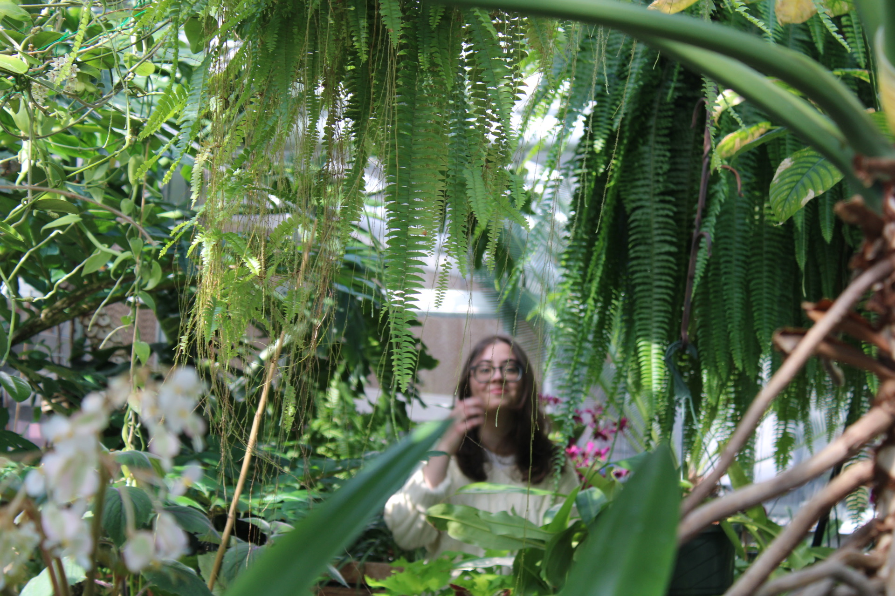

Julia Vaz
I’m a journalist interested in pursuing stories about the science and social impacts behind climate change. My goal is to innovate the way we tell stories about climate change, exploring multimedia approaches to highlight local communities and their relationships to nature. I’ve been an inside climate news fellow and interned at heatmap news. Most recently, I worked as a by degrees intern at nhpr, where I also wrote features for npr. In 2025, I graduated from brown university with degrees in political science and modern culture & media.
